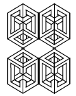
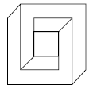
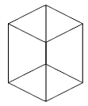
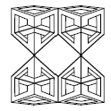
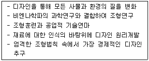
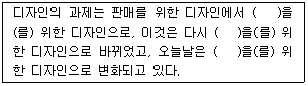
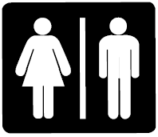

시각디자인산업기사 (2007-05-13 기출문제)
1과목: 색채학
1. 같은 물체의 색이라도 조명에 따라 색이 달라져 보이는 현상은?
- 불광 투과율
- 조건등색
- 광원의 연색성
- 표준광
(정답률: 알수없음)

2. 다음 중 PB의 보색은?
- 노랑
- 빨강
- 주황
- 연두
(정답률: 알수없음)
3. 다음 먼셀 색채기호 중 연두색은?
- 5Y 9/14
- 10Y 7/8
- 5YR 6/12
- 5GY 7/10
(정답률: 알수없음)
4. 주위색의 영향으로 인접색에 가깝게 느껴지는 현상은?
- 인접현상
- 동화현상
- 보색현상
- 주목현상
(정답률: 알수없음)
5. 다음 색채조화론 중 색입체로서 오메가(W)공간을 설정한 조화이론은?
- 오스트발트의 조화론
- 문.스펜서의 조화론
- 져드의 조화론
- 오스트발트와 져드의 조화론
(정답률: 알수없음)
6. 다음 먼셀 색입체에 관한 설명 중 옳은 것은?
- 색상은 방사상으로, 명도는 수평으로 배열해 놓았다.
- 동일 색상면에서 아래로 갈수록 명도가 낮다.
- 외부(바깥쪽)로 나갈수록 채도가 낮아진다.
- 색입체는 색의 3속성을 기호로 나타낼 수 없다.
(정답률: 알수없음)
7. 다음 중 명시성이 가장 큰 것은?
- 백색 배경에 녹색 글씨
- 녹색 배경에 백색 글씨
- 황색 배경에 흑색 글씨
- 흑색 배경에 적색 글씨
(정답률: 알수없음)
8. 다음 2색상의 조화 중 가장 약한 대비의 조화는?
- 1ea - 9ea
- 8ea - 14ea
- 6ea - 10ea
- 3ea – 5ea
(정답률: 알수없음)
9. 태양이 뜨거나 질때 노을이 나타나는 것은 빛의 어떤 성질 때문인가?
- 굴절
- 산란
- 회절
- 반사
(정답률: 알수없음)
10. 디지털 색채의 활용에서 그래픽 화면의 선명한 정도를 일컫는 용어는?
- 화소
- 조도
- 해상도
- 음영도
(정답률: 알수없음)
11. 안전 색채로서 금지, 소방 기구 등에 사용되는 색채는?
- 보라
- 빨강
- 녹색
- 회색
(정답률: 알수없음)
12. 색의 연상에 대한 설명으로 옳은 것은?
- 색의 연상에서 유.소년층은 추상적 사례를, 연령층이 높아지면서 구체적 사례를 떠올리는 경향이 강하다.
- 하나의 색에 대한 구체적 연상에는 중간색보다 선명한 색이 연상어가 많은 경향을 보인다.
- 노랑 - 레몬, 파랑 - 하늘은 '추상적인 연상'이다.
- 현실의 사물과 연결되는 '구체적인 연상'에는 흰색 - 청결, 검정 - 불안 등이 있다.
(정답률: 알수없음)
13. 다음 중 부의 잔상과 관련된 설명은?
- 색의 관찰 시간이 짧을 때 주로 나타난다.
- 원래의 색과 보색인 잔상이 지각된다.
- 장소가 어두울 때 주로 나타난다.
- 원래의 자극과 같은 잔상을 의미한다.
(정답률: 알수없음)
14. 오스트발트 색상환은 몇 색상인가?
- 10
- 24
- 36
- 46
(정답률: 알수없음)
15. 색과 혼합에 관한 설명 중 잘못된 것은?
- 3원색은 Red, Green, Blue 이다.
- Green과 Blue를 혼합하면 Cyan이된다.
- Blue와 Red를 혼합하면 Violet이 된다.
- Red와 Green을 혼합하면 Yellow가 된다.
(정답률: 알수없음)
16. 중간채도의 빨간색을 회색바탕 위에 놓는 것보다 선명한 빨강바탕 위에 놓았을 때 채도가 더 낮아 보이는 현상은?
- 채도 대비
- 색상 대비
- 명도 대비
- 보색 대비
(정답률: 알수없음)
17. 중간혼합에 대한 설명으로 틀린 것은?
- 회전 혼합된 색의 명도는 혼합하려는 색들의 중간명도가 된다.
- 신인상파들의 회화에 도입한 것은 중간 혼합 중 병치 혼합이다.
- 중간 혼합 중 회전 혼합은 일종의 감법 혼합이다.
- 컬러 TV는 색광의 병치 혼합을 응용한 예이다.
(정답률: 알수없음)
18. 색채의 상징에서 빨강과 관련이 없는 것은?
- 정열
- 시원함
- 위험
- 흥분
(정답률: 알수없음)
19. 다음 중 문. 스펜서의 색채 조화 이론과 관련이 있는 것은?
- 조화와 부조화
- 질서의 원리
- 친숙의 원리
- 윤성조화
(정답률: 알수없음)
20. 한국의 전통색 중 북쪽을 의미하는 것은?
- 파랑
- 빨강
- 흰색
- 검정
(정답률: 알수없음)
2과목: 인쇄 및 사진기법
21. 쿠텐베르크가 발명하였을 당시의 인쇄기계는 어느 형식에 속하는가?
- 공판식
- 평압식
- 윤전식
- 원압식
(정답률: 알수없음)
22. 일반적으로 4도 원색인쇄에 사용되는 잉크 색을 옳게 나열한 것은?
- Cyan, Magenta, Red, Black
- White, Red, Yellow, Black
- Cyan, Magenta, Yellow, Black
- Blue, Red, Yellow, White
(정답률: 알수없음)
23. 사진제판에서 색분해 원고로 가장 좋은 것은?
- 원색 인쇄물
- 컬러 네거티브 필름
- 컬러 포지티브 필름
- 컬러 인화지
(정답률: 알수없음)
24. 일반적으로 인쇄의 4방식을 가장 옳게 나열한 것은?
- 볼록판인쇄, 평판인쇄, 오목판인쇄, 공판인쇄
- 스크린 인쇄, 공판인쇄, 볼록판인쇄, 평판인쇄
- 라벨인쇄, 볼록판인쇄, 콜로타이프, 평판인쇄
- 금속인쇄, 오목판인쇄, 평판인쇄, 볼록판인쇄
(정답률: 알수없음)
25. 공간감이나 입체감을 표현하기가 부적당하지만 평면적이거나 색을 충실하게 표현할 때 사용되는 광선조건은?
- 순광선
- 측광선
- 역광선
- 반역광선
(정답률: 알수없음)
26. 투명체, 반투명체, 불투명체의 물체를 직접 인화지 위에 올려놓고 빛을 주어 생긴 그림자에 의해 구성되는 작품 또는 기법을 무엇이라고 하는가?
- 포토그램
- 포토몽타쥬
- 디포메이션
- 솔라리제이션
(정답률: 알수없음)
27. 펄프(Pulp)의 원료가 되는 식물섬유의 화학적 조성으로만 나열된 것은?
- 폴리올레핀, 셀룰로오스, 클로로포름, 폴리에틸렌
- 크라프트, 폴리올레핀, 리그닌, 풀리에스테르
- 셀룰로오스, 헤미셀룰로오스, 리그닌
- 디스크리파이너, 헤미셀룰로오스, 리그닌
(정답률: 알수없음)
28. 문자 크기에서 1포인트(point)는 약 몇 mm인가?
- 0.254
- 2.54
- 3.514
- 0.3514
(정답률: 알수없음)
29. 컬러 감광재료의 3가지 층의 유제가 발색하는 각각의 커플러가 바르게 연력된 것은?
- 청감층 - 옐로 (yellow)
- 녹감층 - 시안 (cyan)
- 적감층 - 마젠타 (magenta)
- 녹감층 - 블랙 (black)
(정답률: 알수없음)
30. 지나치게 높은 화상농도와 콘트라스트를 감소시키기 위해 은화상의 일부를 산화 용해 제거하는 작업은?
- 조색
- 탈막
- 보력
- 감력
(정답률: 알수없음)
31. 스포츠 사진에서 피사체를 중심으로 한 배경을 방사형태로 표현하고자 할 때의 촬영기법으로 가장 적합한ㅜ 것은?
- 셔터속도 1/500초로 하고 촬영
- 블러(blur)기법 이용
- 주밍(zooming)기법 이용
- 패닝(panning)기법 이용
(정답률: 알수없음)
32. 한 물질의 경계면에 빛이 입사할 때, 그 단색광 성분의 진동수는 변하지 않고 빛이 다시 되돌아 오는 현상은?
- 투과
- 굴절
- 반사
- 흡수
(정답률: 알수없음)
33. 다음 중 현상촉진제로 사용되는 약품은?
- 아황산나트륨
- 탄산나트륨
- 메톨
- 티오황산나트륨
(정답률: 알수없음)
34. 표지 인쇄물의 표면가공을 하는 주된 목적이 아닌 것은?
- 습기방지
- 인쇄지면의 광택내기
- 내약품성
- 원가절감
(정답률: 알수없음)
35. 컬러사진에서 강한 청색광이 청감유제층에 흡수되고 난 후 나머지 청색광이 아래 유제층에 영향을 주지 못하도록 하는 역할을 하는 층은?
- 중간층
- 황색필터층
- 보호층
- 적감유제층
(정답률: 알수없음)
36. 카메라에 들어오는 빛의 양을 조절하는 장치로서 피사체의 운동감을 결정하는 것과 관련이 있는 것은?
- 셔터
- 렌즈후드
- 파인더
- 램프
(정답률: 알수없음)
37. 접사를 하기 위한 도구로 가장 적합하지 않은 것은?
- 벨로즈
- 중간링
- 클로즈업 렌즈
- 브라케팅
(정답률: 알수없음)
38. 일반적인 공판 인쇄의 특징에 속하지 않는 것은?
- 잉크가 화선부를 통과해서 피인쇄체에 인쇄된다.
- 비화선부는 잉크가 통과하지 않는다.
- 타인쇄법보다 제판 비용이 저렴하며 마지널존 현상이 나타난다.
- 타인쇄에 비하여 잉크층이 두껍다.
(정답률: 알수없음)
39. 인화지의 양면을 수지로 코팅하여 약품소모를 줄이고 수세와 건조시간을 단축시킨 인화지는?
- RC 인화지
- PC 인화지
- MG 인화지
- VC 인화지
(정답률: 알수없음)
40. 카메라의 기본 구조에 해당되지 않는 것은?
- 파인더
- 조리개
- 삼각대
- 셔터
(정답률: 알수없음)
3과목: 시각디자인론
41. 시각전달 디자인과 가장 거리가 먼 것은?
- 에디토리얼 디자인
- 랜드스케이프 디자인
- 타이포그래피
- 일러스트레이션
(정답률: 알수없음)
42. 다음 중 현실적 형태와 거리가 먼 것은?
- 구상적 형태
- 순수 형태
- 인위적 형태
- 구조적 형태
(정답률: 알수없음)
43. 다음 중 설계자의 뜻을 작업자에게 완전하게 전달할 수 있는 충분한 내용과 가공 용이 및 제작비 절감 등을 고려하여 작성해야 할 도면은?
- 주문도
- 제작도
- 승인도
- 견적도
(정답률: 알수없음)
44. 다음 중 밀집되고 집합되면, 면 또는 형으로 변하게 되는 디자인 요소로 신문의 사진판을 확대해보면 나타나는 것은?
- 점
- 선
- 색채
- 명암
(정답률: 알수없음)
45. 바우하우스와 관련이 없는 것은?
- 미술가의 가치있는 도구로서 기계를 허용
- 실용성을 추구하는 생활미술로써 디자인의 독자적 범주확립
- 기술과 창의를 구별
- 건축, 공예, 디자인을 분리하여 심미주의로 변환
(정답률: 알수없음)
46. 제1차 세계대전 전후 독일을 중심으로 일어난 사조가 작가의 마음의 상태, 감정 등에 중점을 둔 매우 주관적인 경향을 지닌 예술사조는?
- 미래주의
- 표현주의
- 구성주의
- 입체주의
(정답률: 알수없음)
47. 디자인과 관련된 환경의 변화와 비교적 거리가 먼 것은?
- 경제, 사회환경의 변화
- 기술 혁신화
- 국제 분업화
- 지방산업의 왜곡화
(정답률: 알수없음)
48. 경험적으로 이미 알고 있는 형과 실제형으로 등장한 형의 많은 선들이 불가능한 방법으로 연결되는 상황 때문에 생기는 것이 '불가능한 형'이다. 이는 의도적인 부정확성을 만들거나 시각적 유희 또는 시각적 수수께끼를 만들어 낸다. 다음 중 불가능한 형이 아닌 것은?




(정답률: 알수없음)
49. 다음 중 축측투상도법이 아닌 것은?
- 2등각 투상도
- 사투상도
- 부등각 투상도
- 등각 투상도
(정답률: 알수없음)
50. 다음 중 그린 디자인과 관계가 없는 것은?
- 재활용 사용에 대한 고려
- 기업의 이윤 추구
- 기업의 이미지 제고
- 환경에 대한 홍보 효과
(정답률: 알수없음)
51. 바우하우스의 타이포그래픽 공방 교수이면서, 유니버설서체를 디자인한 사람은?
- 헤르베르트 바이어
- 에밀 루더
- 칸딘스키
- 폴 클레
(정답률: 알수없음)
52. 다음 중 디자인의 과정에 해당 되지 않는 것은?
- 욕구과정
- 조형과정
- 재료과정
- 판매과정
(정답률: 알수없음)
53. 다음 중 투시도법의 기본 요소가 아닌 것은?
- 눈의 위치
- 대상물
- 색채
- 거리
(정답률: 알수없음)
54. 소비자의 구매심리 작용인 아이드마(AIDMA) 법칙의 5단계와 거리가 먼 것은?
- Approach
- Interest
- Desire
- Memory
(정답률: 알수없음)
55. 다음과 같은 디자인 활동이 펼쳐진 곳은?

- 스위스 공작가연맹
- 영국 산업디자인협회
- 독일 바우하우스
- 프랑스 왕립공예학교
(정답률: 알수없음)
56. 면직물의 시장 경쟁력 강화를 위해 문양을 장식으로 적용함으로서 근대적 의미의 산업디자인 태동으로 볼 수 있는 것은?
- 독일 공작연맹
- 영국 산업혁명
- 스위스 아방가르드
- 벨기에 아르누보
(정답률: 알수없음)
57. 커뮤니케이션의 기능과 매체가 바르게 연결된 것은?
- 지시적 기능 : 심볼마크, 패턴
- 설득적 기능 : 신문광고, DM
- 상징적 기능 : 회화, 사진
- 기록적 기능 : 화살표, 지도
(정답률: 알수없음)
58. 유각 투시도는 소점이 몇개인가?
- 1개
- 2개
- 3개
- 4개
(정답률: 알수없음)
59. 기업에서의 디자인 개발에 있어 가장 중요하게 고려해야 할 마케팅 요소는?
- 소비자의 취미(hobby)
- 소비자의 니즈(needs)
- 소비자의 수준(level)
- 소비자의 출신(native)
(정답률: 알수없음)
60. 독일공작연맹(DWB)에 대한 설명 중 틀린 것은?
- 이성적이고 단순한 디자인을 추구하였다.
- 산업생산제품의 질적 수준을 높이는데 목적을 두었다.
- 1907년에 마이어(Meyer. Hannes)가 결성한 미술가, 공예가, 실업가의 모임이었다.
- 공업제품의 양질화, 규격화의 모색으로 제품의 대량생산을 지향하였다.
(정답률: 알수없음)
4과목: 시각디자인실무 이론
61. 다음 중 시장조사의 기본적 방법이 아닌 것은?
- 순위법
- 질문법
- 관찰법
- 실험법
(정답률: 알수없음)
62. 광고 디자인에서 <레이아웃> 이 갖춰야 할 조건과 가장 거리가 먼 것은?
- 가독성
- 주목성
- 의미성
- 통일성
(정답률: 알수없음)
63. 신제품에 대한 소비자의 반응을 알아보기 위해 한 쌍의 반대 형용사를 양극에 놓고 두 대상의 위치를 동일한 의미 공간내에서 두 형용사에로의 편중 정도를 알아 보고 다차원의 공간으로 평가하는 조사 방법은?
- 평가 스케일(evaluation scale)
- 의미분별 척도법(semantic differential)
- 순위 차트(ranking chart)
- 평가 매트릭스(evaluation matrix)
(정답률: 알수없음)
64. 다음 중 타이포그래피의 요령에 대한 설명으로 잘못된 것은?
- TV 타이포그래피는 가능한 중간 굵기나 굵은 체가 좋다.
- 옥외(屋外) 타이포그래피는 문자 판독성이 중요하기 때문에 정교한 문자체는 피하는 것이 좋다.
- 전면적인 대문자(영어일 경우) 사용은 독서 속도를 높인다.
- 타이포그래피는 목적에 합당하고 만들기 쉽고, 아름다워야 한다.
(정답률: 알수없음)
65. 주로 점두 또는 옥외에 세워서 설치하는 간판은?
- 옥상간판
- 위장간판
- 입간판
- 야외간판
(정답률: 알수없음)
66. 다음 중 DM의 종류가 아닌 것은?
- folder
- card
- booklet
- pictogram
(정답률: 알수없음)
67. 다음의 ( )안에 들어갈 단어를 순서대로 나열한 것은?

- 소비, 인간, 생산
- 생산, 인간, 소비
- 인간, 생산, 소비
- 생산, 소비, 인간
(정답률: 알수없음)
68. 에디토리얼 디자인의 요소로 글자의 크기, 형, 가격, 글자체 등과 관계가 밀접한 용어는?
- 포토그래피 (photography)
- 레이아웃 (layout)
- 타이포그래피 (typography)
- 인쇄 (printing)
(정답률: 알수없음)
69. 마케팅에 있어서 소비자 행동에 영향을 미치는 요인이 아닌 것은?
- 개인적 요인
- 심리적 요인
- 사회적 요인
- 강제적 요인
(정답률: 알수없음)
70. 다음 중 포장의 기능이 아닌 것은?
- 내용물의 보호
- 취급의 편리
- 상품의 기획
- 상품가치의 부가
(정답률: 알수없음)
71. 리커트 척도(Likert Scale) 사용의 네 단계 중 제일 첫 단계는?
- 조사하고자 하는 태도에 관한 리스트 작성
- 동의 또는 반대한다는 반응을 선정
- 자기의 태도를 나타내는 반응을 보이도록 처리
- 각 반응과 관련된 가중치를 합계하여 계산
(정답률: 알수없음)
72. P.O.P(Point of Purchase advertising)광고에 관한 내용이 아닌 것은?
- P.O.P 광고개면이 성립된 것은 1930년대 미국에서이다.
- 주로 옥외에 세워서 설치한다.
- 상품을 손에 집어들게 하는 구체적인 행위유발을 유도하는 광고이다.
- 점두, 점내에서 타사 제품보다 유리한 조건으로 상품에 주의를 끌도록하여 충동구매를 노린다.
(정답률: 알수없음)
73. 드라마나 영화의 주요 장면을 간단하게 그려서 패널(panel)화 한 것은?
- thumbnail sketch
- comprehensive
- story photo
- story board
(정답률: 알수없음)
74. 카메라, 보석, 낚시대 등 전문용품 광고를 하려고 할 때 가장 적합한 것은?
- TV
- 라디오
- 신문
- 잡지
(정답률: 알수없음)
75. 마케팅 믹스의 구성요소가 아닌 것은?
- plant
- product
- price
- promotion
(정답률: 알수없음)
76. 다음과 같은 그림을 지칭하는 용어는?

- 픽토그램
- 캐릭터
- 심벌마크
- 사인
(정답률: 알수없음)
77. 화면이나 바탕인쇄를 지면 전체에 꽉 차도록 레이아웃 하는 것은?
- 블리드(bleed)
- 거터(gutter)
- 그리드(grid)
- 헤드에지(head-edge)
(정답률: 알수없음)
78. CI의 구성 요소 중에는 기본요소와 응용요소가 있다. 다음 중 기본요소는?
- 서식
- 유니폼
- 차량류
- 색채
(정답률: 알수없음)
79. 다음의 체험 마케팅 중 21세기형 마케팅이라 불리는 컬러 향기, 음향 마케팅과 관련이 있는 것은?
- 감각 마케팅
- 감성 마케팅
- 지성 마케팅
- 관계 마케팅
(정답률: 알수없음)
80. 신문광고의 구성요소 중 내용적 요소가 아닌 것은?
- 헤드라인(Head Line)
- 보더라인(Border Line)
- 보디카피(Body Copy)
- 캡션(Caption)
(정답률: 알수없음)